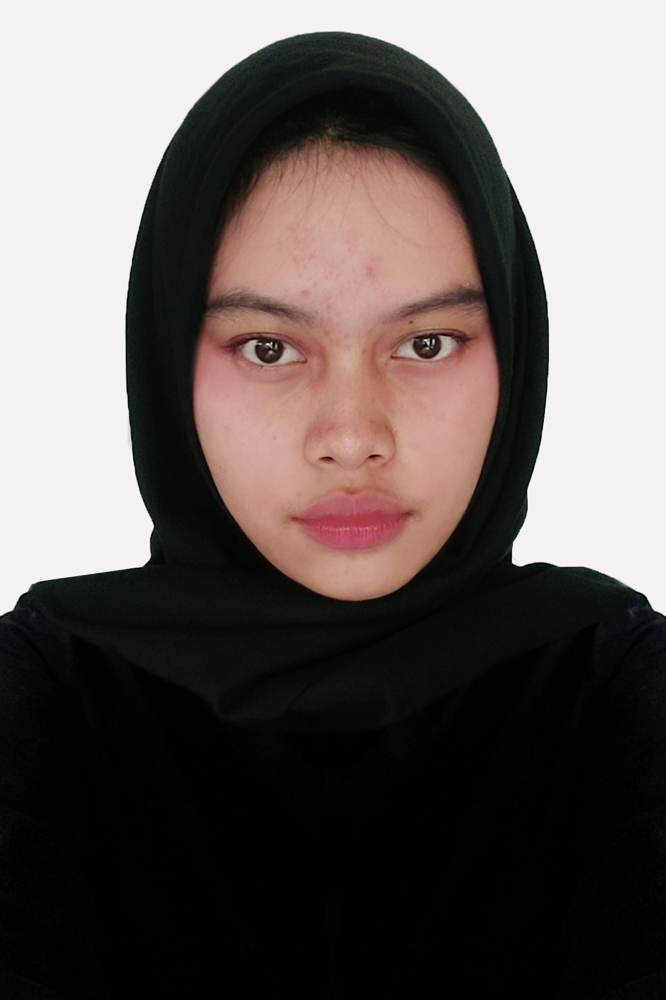

INSTITUT
INSTITUT Biodata Mahasiswa

| Nama | : Sekar Alit Istiqomah |
| NIM | : 119140126 |
| Prodi | : Teknik Informatika |
| TTL | : Jakarta, 26 Desember 2001 |
| Telepon | : 081288341960 |
| : @skralit | |
| Github | : skrrlt |
| : sekarralit@gmail.com |
About
Institut Teknologi Sumatera, disingkat ITERA, adalah sebuah perguruan tinggi negeri terdapat di Provinsi Lampung di Pulau Sumatra. Lokasinya berada di antara wilayah Kabupaten Lampung Selatan dengan Kota Bandar Lampung. ITERA didirikan berdasarkan Peraturan Presiden Nomor 124 Tahun 2014 tentang Pendirian Institut Teknologi Sumatera (Lembaran Negara Republik Indonesia Tahun 2014 Nomor 253) yang ditetapkan Presiden Republik Indonesia Dr. H. Susilo Bambang Yudhoyono pada tanggal 6 Oktober 2014 dan diundangkan tanggal 9 Oktober 2014.
Alamat : Jalan Terusan Ryacudu, Way Hui, Kecamatan Jati Agung, Lampung Selatan 35365
Contact
 Telepon Telepon | : (0721) 8030188 / (0721) 8030189 |
 E-mail E-mail | : pusat@itera.ac.id |
 Facebook Facebook | : itera.official |
| : @iteraofficial | |
 Twitter Twitter | : @ITERAOfficial |